I travelled to the Americana Amusement Park with Rookie in early March of 2000, as part of a double mission which also included a visit to the defunct Fantasy Farm. They stand right next to each other on Route 4 in an area once called Lesourdsville Lake, but actually just Middletown, Ohio. The reason we visited Americana was that the park, which has been around since it was built by Edger Streifhau in 1921, had just announced that it wouldn’t re-open in the spring.
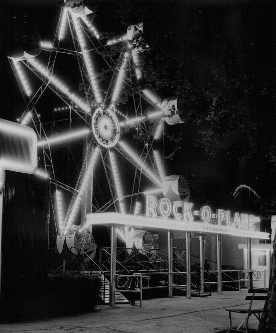
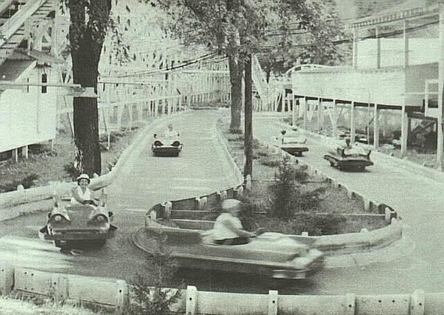
Some pics from the old days
This is a park with some real history. Almost everyone local I mention it to says something about having gone there. Of course, thanks to my neglectful parents, I never went. For more info and pictures check out Rookie’s Illicit Ohio page.
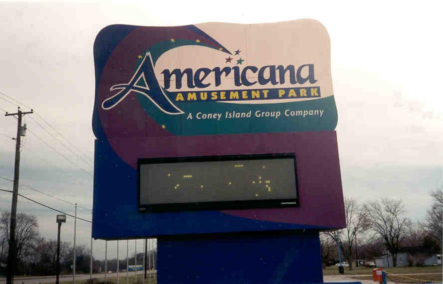
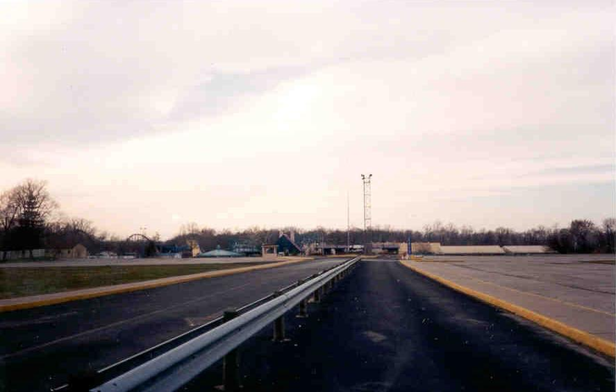
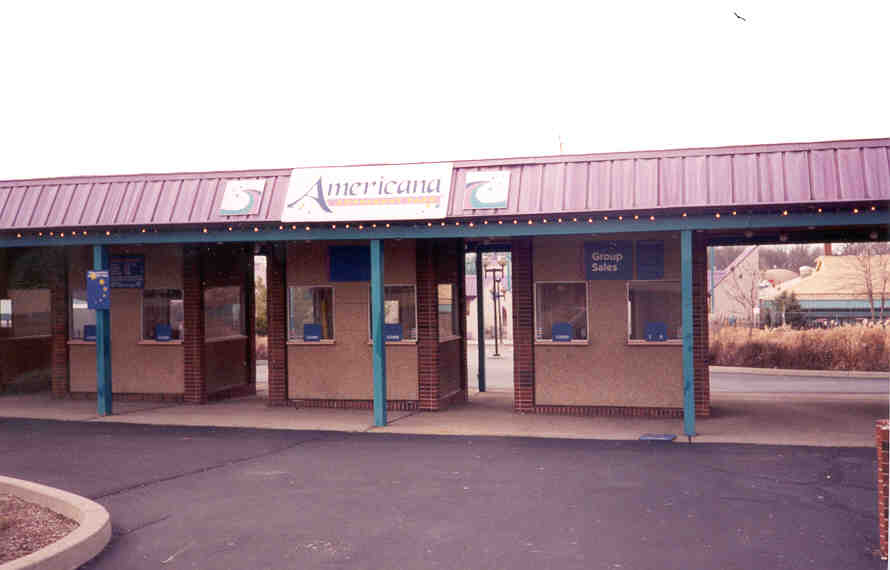
Beyond the vast parking lot (where cops like to hang out and clock people on the radar, by the way, so be warned) are the ticketing booths, followed by the front gate. This was not your typical abandoned place, however, as there were definite signs of habitation as recent as that day. Through the gates we saw the guard booth, a golf cart with the keys in it, and bags of salt leaned against buildings alongside shovels. Our suspicions about the place being guarded were confirmed during a subsequent visit, when Hoss and I infiltrated the place at night and were forced to hide from a guard making his rounds in a pickup truck. This time--during the day--we didn’t see any guards.
We snuck in a side way rather than hopping the front gate and proceeded to explore the place, which really resembled nothing more than an active amusement park in the off-season. The fate of Americana, however, is apparently to take its place alongside Idora Park and Chippewa Lake as one of Ohio’s forgotten amusement parks.
The rides were still in place, although many of their cars were not. Click on either option to take a look at the rides.
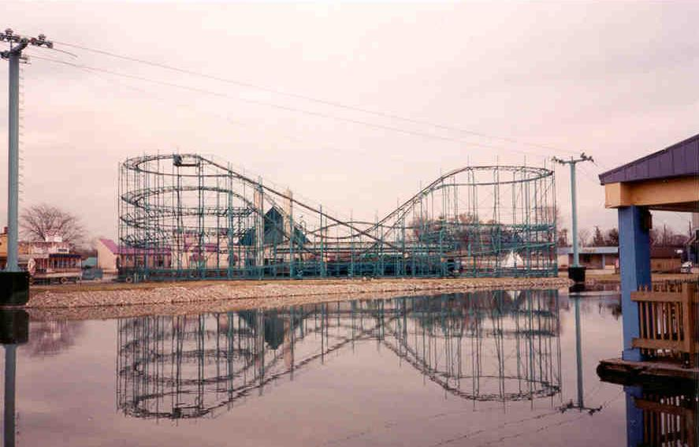
Roller Coasters
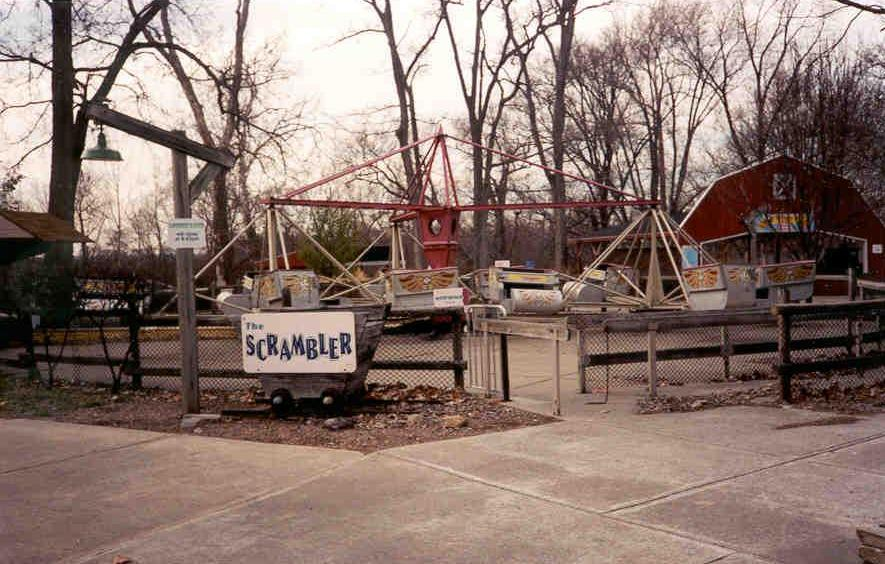
Other Rides
We walked through and passed numerous interesting sights. We were a little nervous to go right up to the center, since we thought a guard might be lurking around somewhere, but we did get lots of shots of the area.
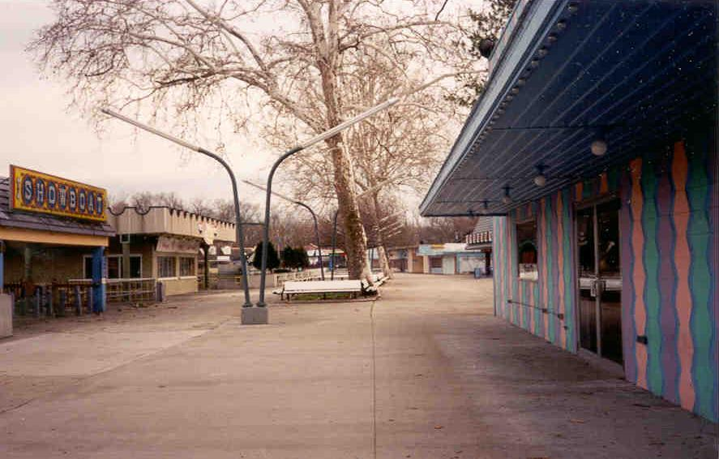
The Midway
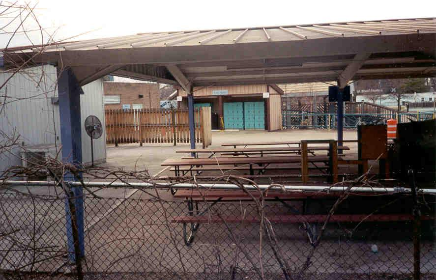
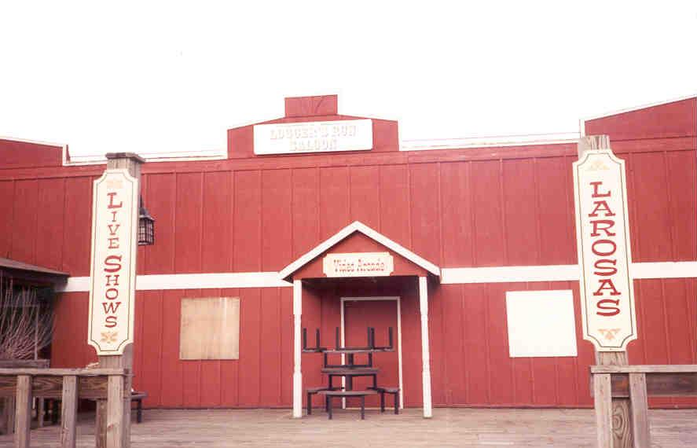
An interesting feature of Americana is its animals. They must have been there to entertain the kiddies. One was still up: the bear. The others were stored behind the buildings in the Old West section of the park, and arranged in sexually explicit positions. I must say I laughed for a while at this.
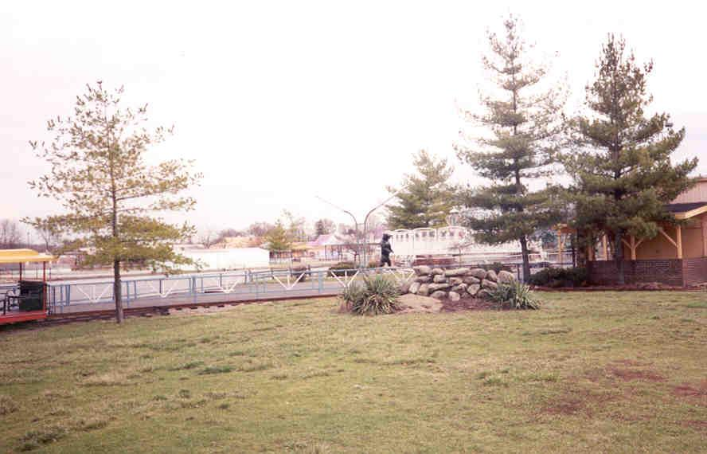
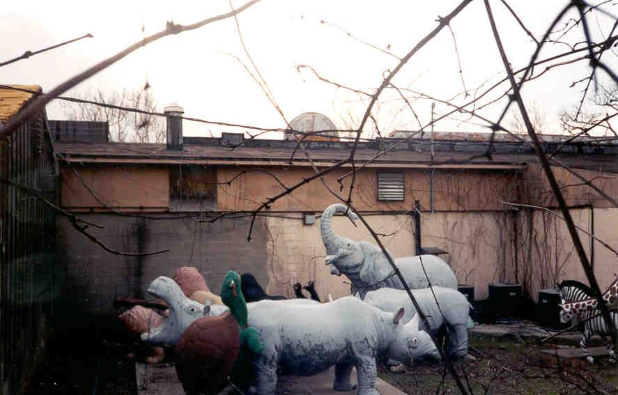
It’s too bad that Americana is closing down; what’s really unfortunate is that I never heard about the place until it shut down. If you go I advise a day trip, unless you feel like dodging a guard. Either way it’s a fun place.
UPDATE: It re-opened, it re-closed. New owners come and go and announcements are made, but Americana remains in limbo, despite a brief revival recently. Its future is anyone's guess.
Back